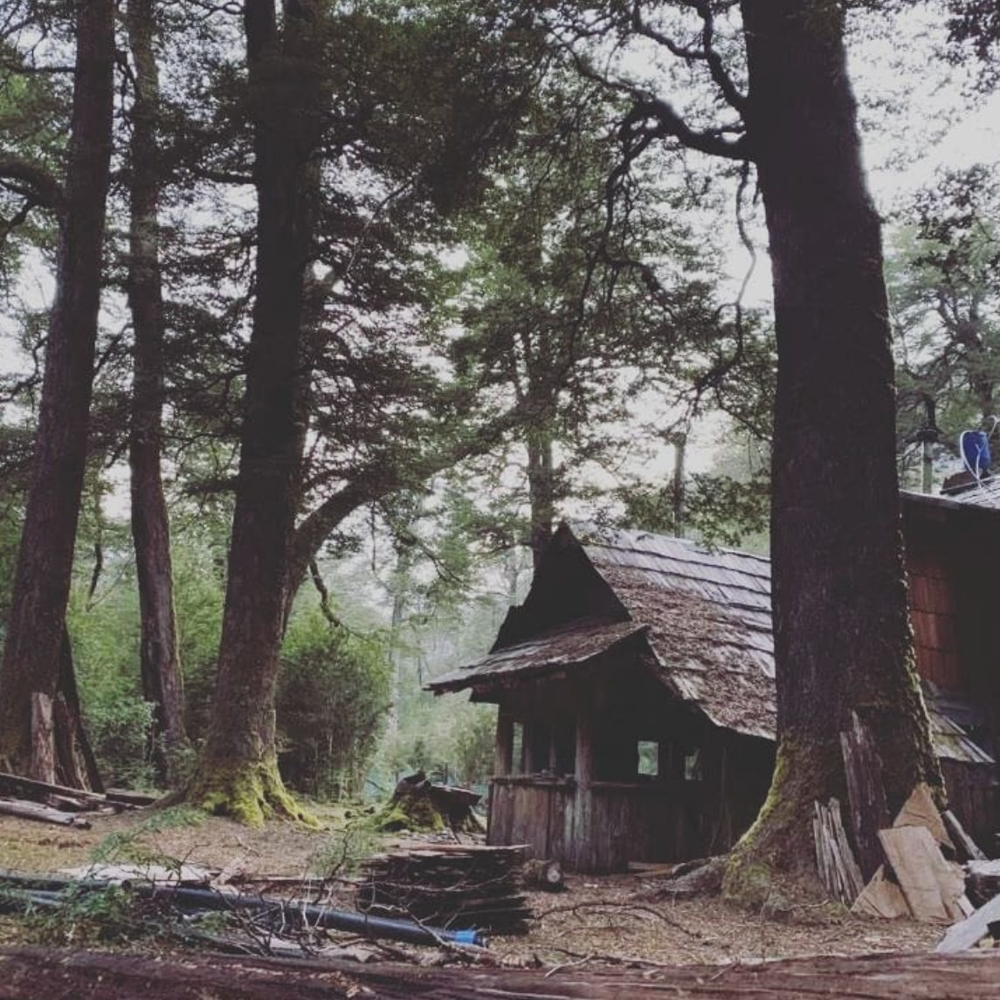
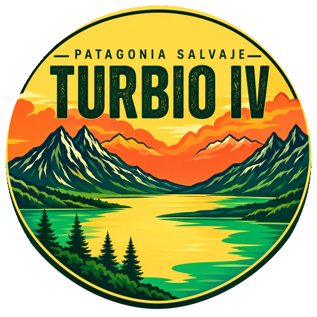
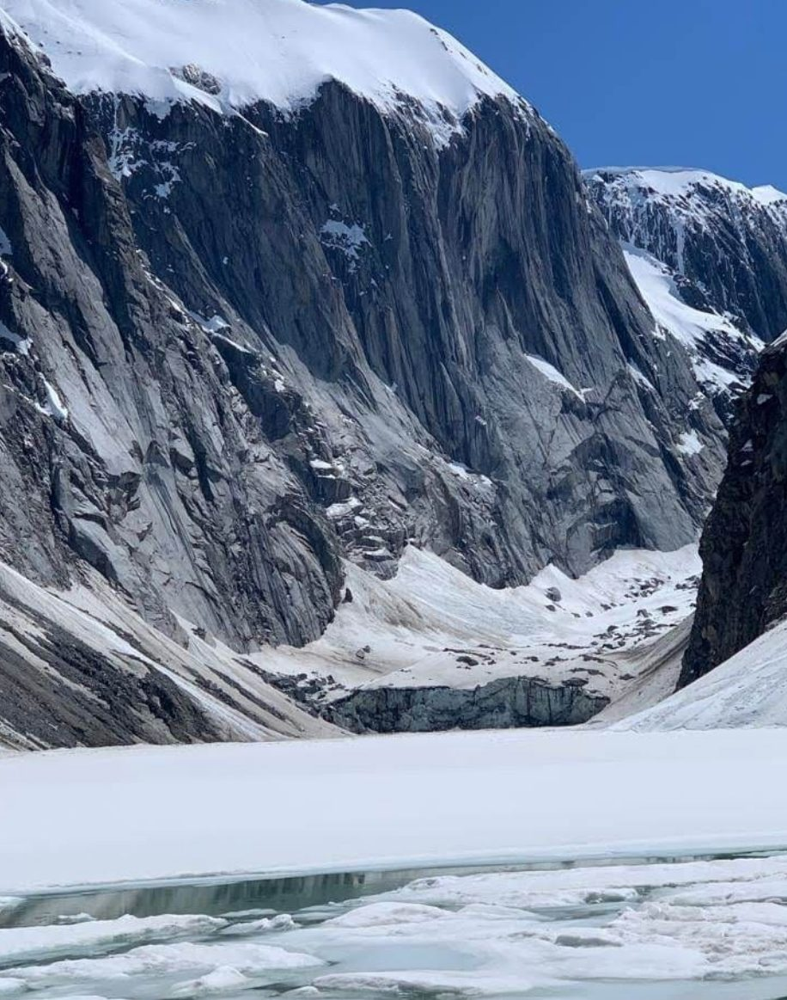
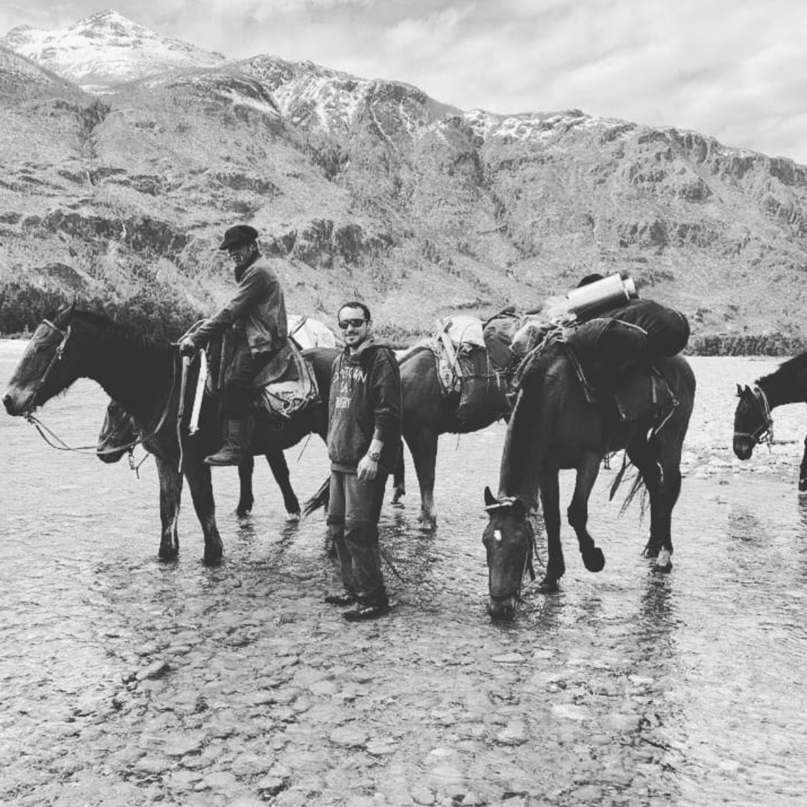
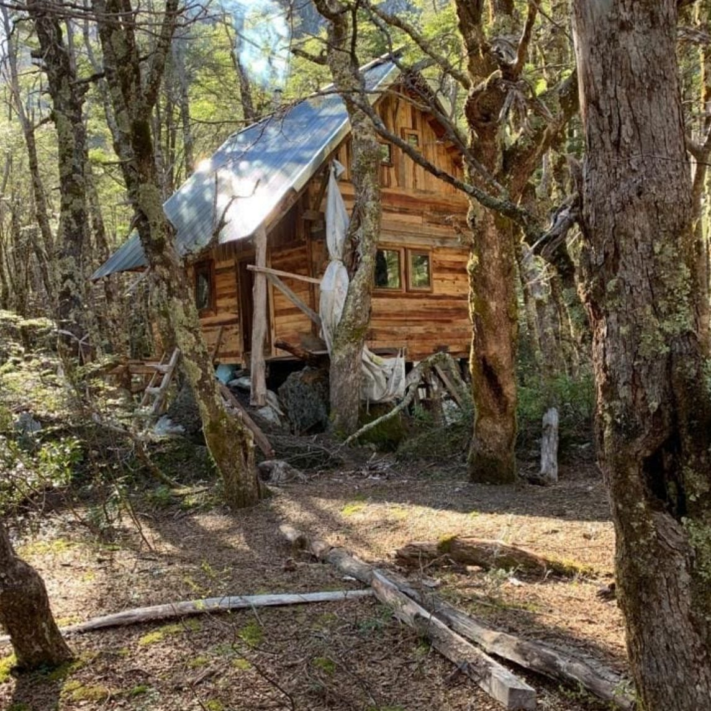
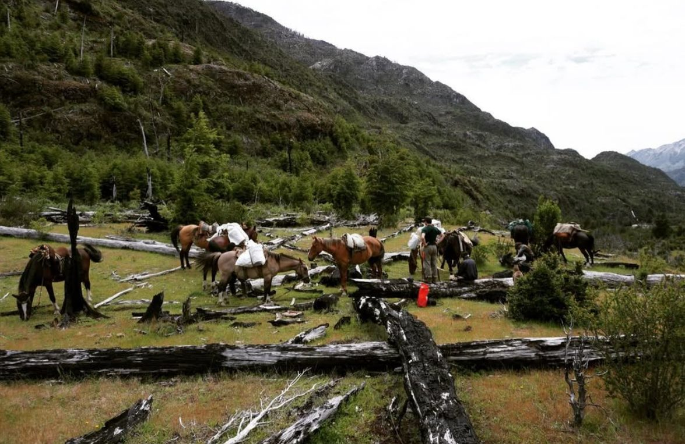
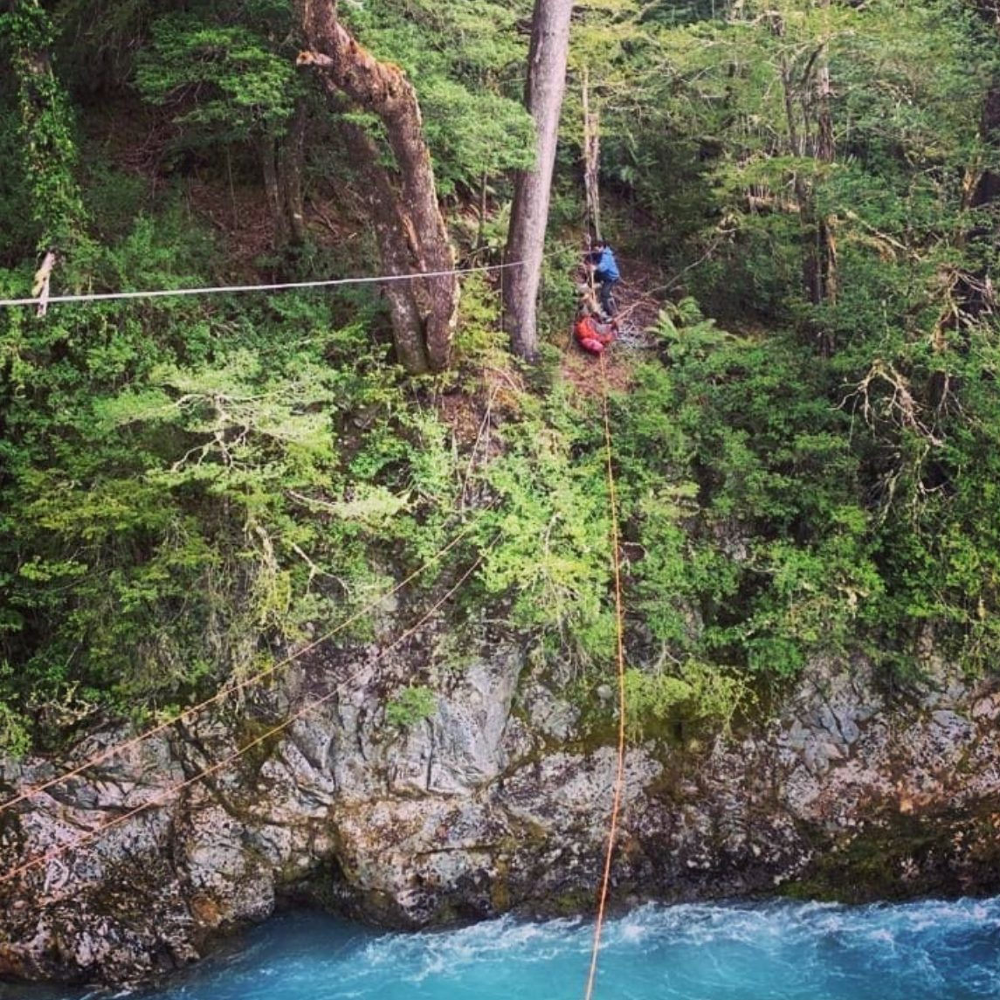
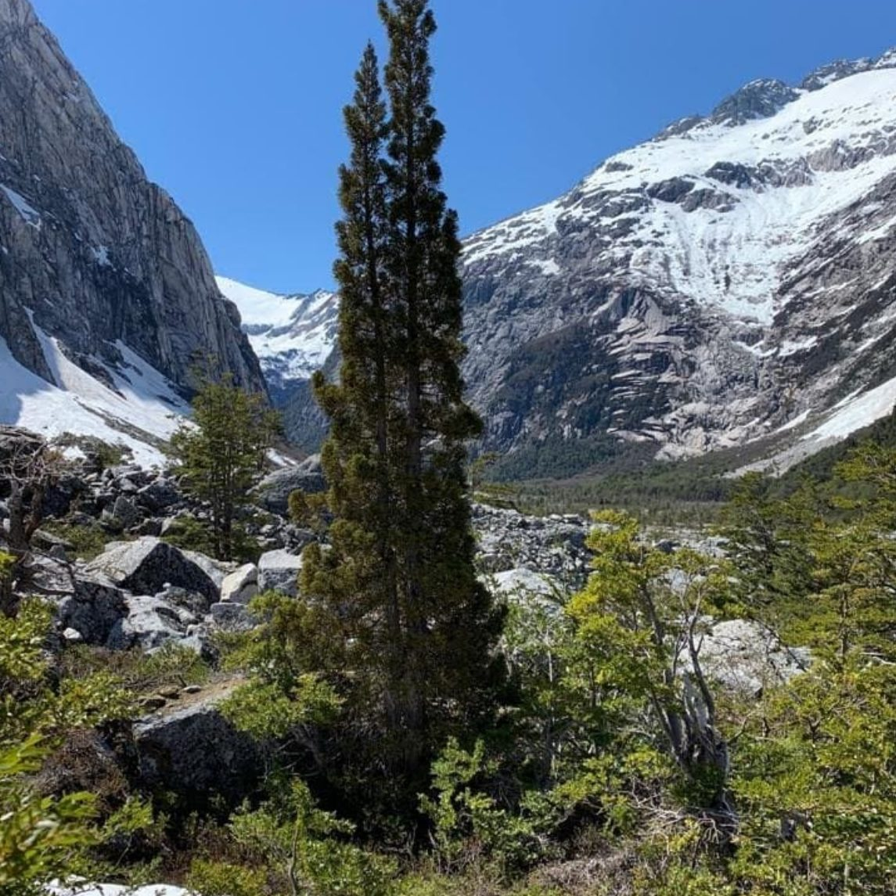

Refugio I

Turbio IV Reservar lugar
— Patagonia salvaje —
Un rincón remoto de la Patagonia argentina, al que solo se llega a pie, a caballo y cruzando el río.
La expedición
Turbio IV es una travesía guiada de once días por bosque nativo, ríos glaciares y paredes de granito. Caminamos con baqueanos de la zona, los caballos cargan el equipo pesado y cada noche dormimos bajo techo en un refugio de montaña.
Comidas, guías, cabalgatas, tirolesa y rafting están incluidos. Vos traés las piernas y las ganas.

Recorrido · 52 km
Recorrido orientativo. El orden exacto de cada jornada lo define el guía según el clima y el río.
Partida · cabalgata
Encuentro con el equipo, se cargan los caballos y empieza el sendero hacia el valle.
Refugio · noche bajo coihues
Primer techo del viaje, rodeado de árboles centenarios. Fuego, cena y a descansar.
Cruce · tirolesa
Cruzamos el cañón colgados de la tirolesa, con el agua glaciar corriendo abajo.
Refugio · cabaña de madera
Una cabaña hecha a mano en medio del bosque. Base para las jornadas más largas.
Refugio · el más adentro
La última noche antes de subir al valle alto.
Valle alto · trekking y escalada
Paredes de cientos de metros, nieve todo el año y una laguna con hielo flotando. El corazón del Turbio.
Regreso · rafting
Bajamos con otra mirada: la misma agua que vimos desde arriba, ahora desde el bote.
Dónde dormimos

Refugio I

Refugio II
Refugio III
Leña, estufa y techo seco al final de cada jornada. Los refugios son simples y de montaña: se comparte el espacio y se duerme en bolsa de dormir.
Qué hacemos

Con baqueanos de la zona y caballos que conocen el camino.

El cruce del cañón, colgado sobre el agua.

52 km de sendero.
Paredes de granito de cientos de metros.
Agua glaciar, color turquesa y la vuelta en bote.
Antes de ir
Reservas y consultas
Los grupos son chicos y las salidas se programan con tiempo. Contanos cuántos son y qué fechas tienen en mente: te respondemos con disponibilidad y precio.
También podés escribirnos a turbio4oficial@gmail.com